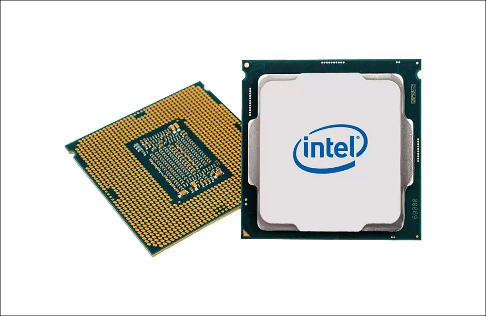
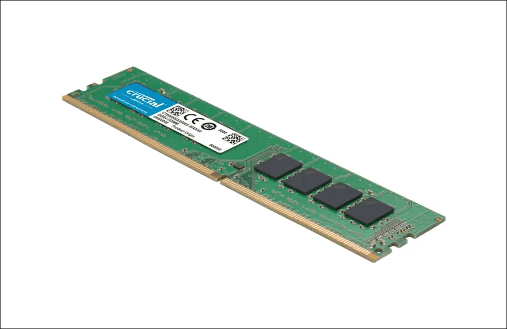
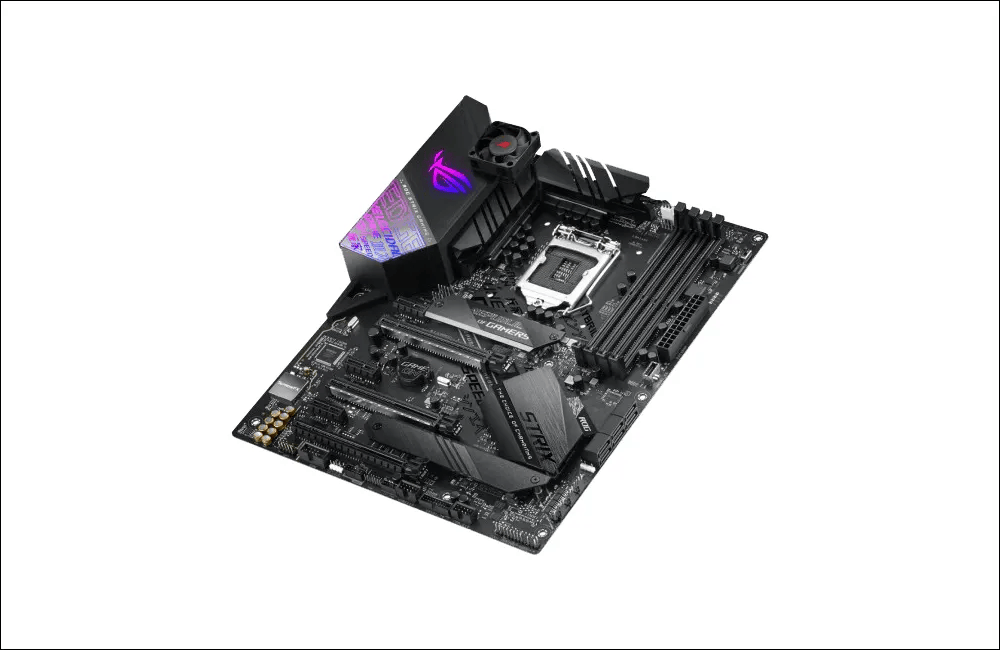
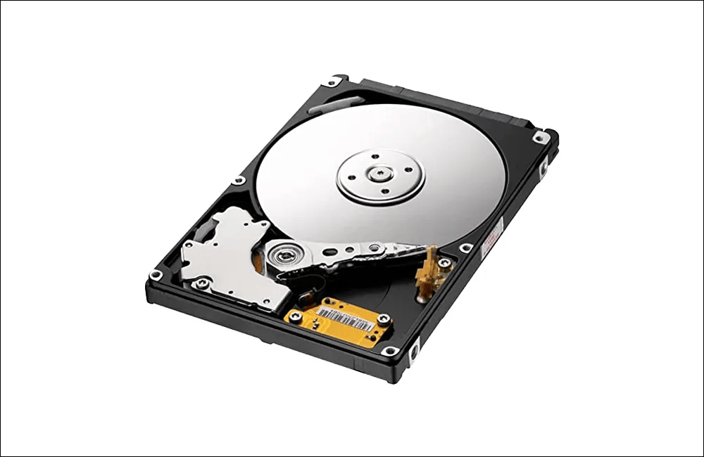
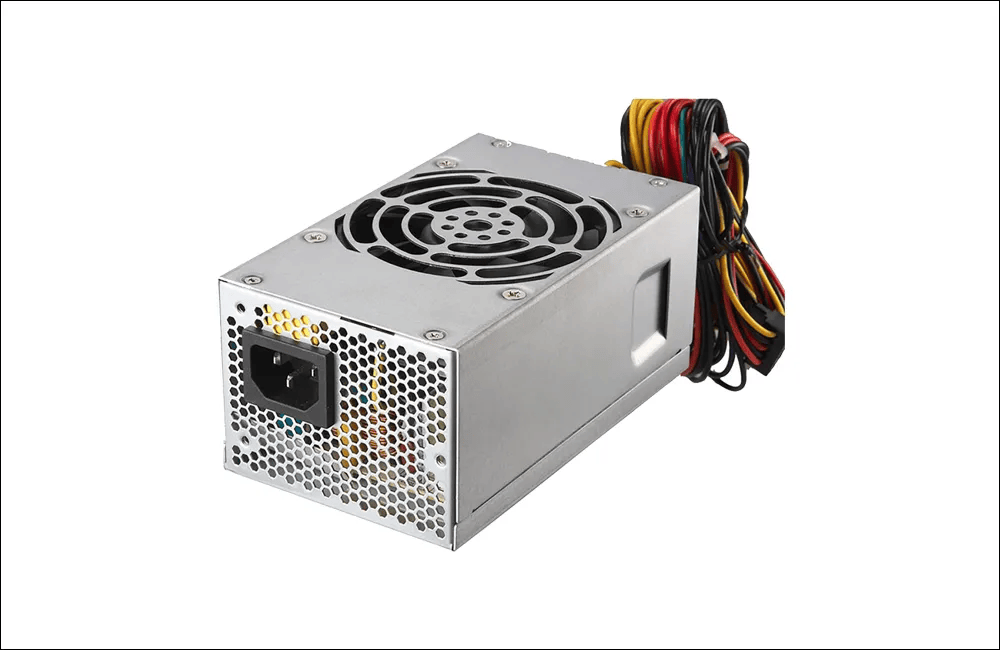

Pengenalan
Komponen
Komputer
Media pembelajaran interaktif berbasis Augmented Reality untuk membantu mengenal bentuk dan fungsi komponen komputer.
Kamera belum aktif
Instruksi
Aktifkan kamera kemudian arahkan kamera ke marker ArUco komponen komputer. Jika marker berhasil dikenali, informasi komponen akan ditampilkan.

Processor
Berfungsi sebagai pusat pemrosesan data pada komputer.

RAM
Menyimpan data sementara saat komputer sedang digunakan.

Motherboard
Menghubungkan seluruh komponen utama komputer.

SSD / Hard Disk
Digunakan untuk menyimpan data dan sistem operasi.

Power Supply
Menyuplai daya listrik ke seluruh komponen komputer.
Pilih menu Scan Marker pada halaman utama.
Tekan tombol Aktifkan Kamera dan izinkan akses kamera.
Arahkan kamera ke marker ArUco komponen komputer.
Jika marker terdeteksi, popup informasi komponen akan ditampilkan.